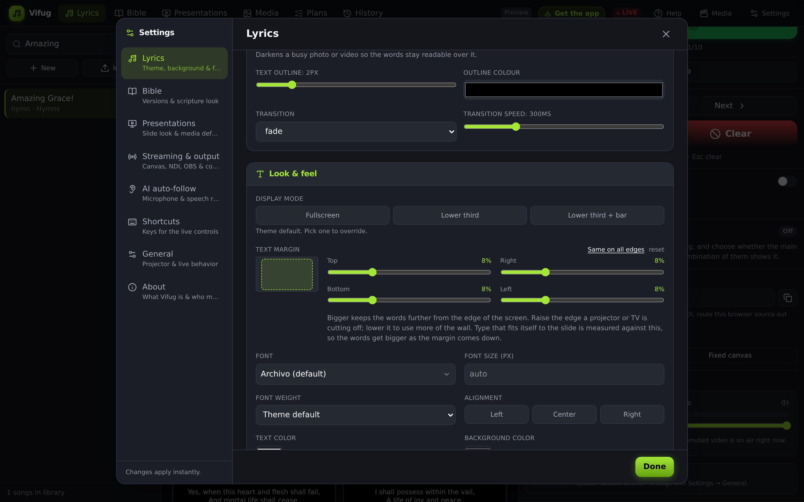
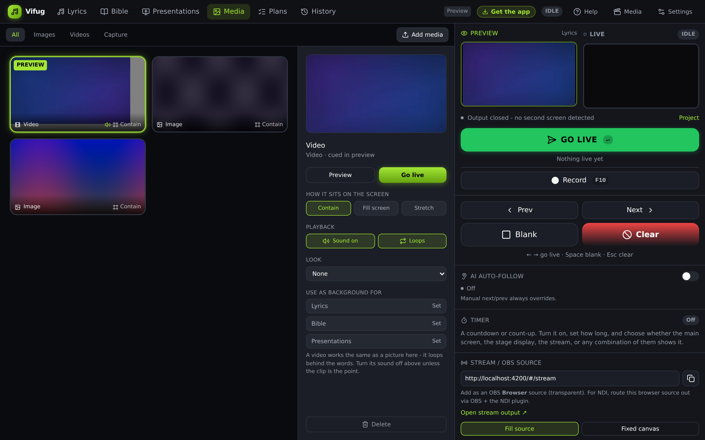
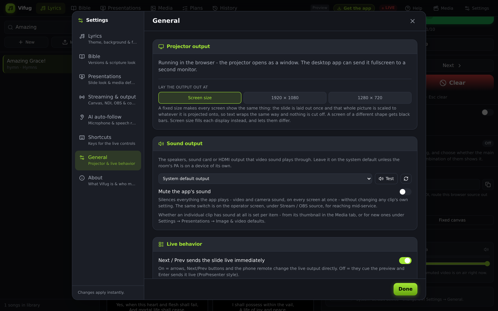
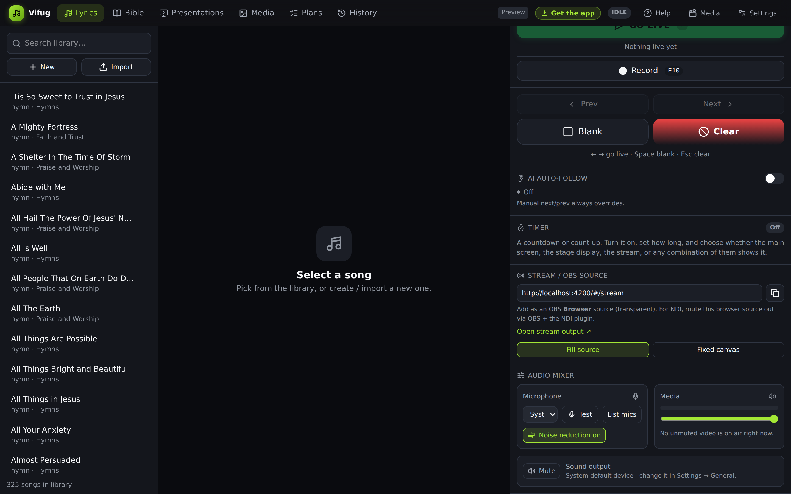
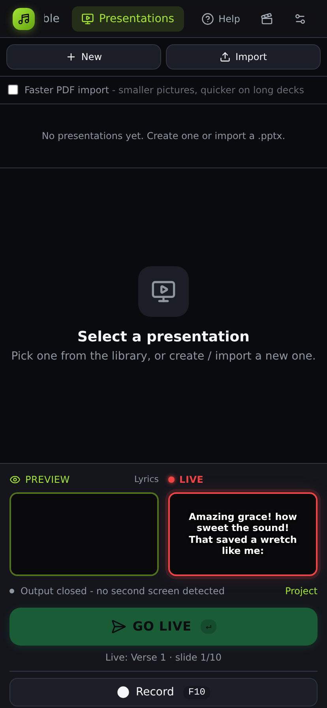

Running a service in Vifug
Everything from your first launch to a full Sunday morning: the library, the Preview → Live workflow that makes mistakes hard to make, the offline Bible, and every screen Vifug can light up at once. Grab a coffee - by the end of this page you'll know the app better than most media teams learn it in a month.
Quick start - your first five minutes

Install it, open it, and you're already looking at a working library. Nothing to configure before your first slide.
-
Install and launch
Run the Windows installer and open Vifug. It ships with 1,100+ songs and hymns and the full offline Bible already loaded - no downloads, no account, no internet required.
-
Decide about the bundled songs
The first launch asks whether to keep the songs that ship with the app. Keep them and you have a working library from the first minute. Start empty and the library is yours alone, which suits a church that already has its own set to import and would rather not search past a thousand hymns to find it. You are not locked in either way - bundled songs can be deleted later, and an empty library can be filled by importing.
-
Pick a song from the library
Use the search box on the left to find a song, or click New to write one from scratch. Click a song to open it in the center panel.
-
Preview a slide, then send it live
Click a slide to load it into Preview on the right, check it looks right, then press Enter or hit GO LIVE. That's the whole rhythm of running a service.
-
Open the projector
In the bottom-right Projector panel, click Open projector. On the desktop app it fills your second monitor automatically; in the browser it opens a preview window.
Nothing goes to the projector until you say so. Preview is completely private - the congregation only ever sees what you deliberately send live. That's the whole design philosophy of the app.
The library - your songs, organized
Every song lives as structured text (verses, choruses, bridges), not a fixed slide deck - so changing your theme, font or lines-per-slide never means rebuilding anything.
Search
The search box filters by title, author or tag as you type - fast enough to find a song mid-transition.
Import
Paste plain text and Vifug auto-detects verses and choruses, import .pro6, .pro, .txt and .docx files straight from ProPresenter or a document, or paste a link to a lyrics page with From a link and Vifug fetches and fills in the text for you to review before importing.
Edit
Reorder sections, repeat a chorus, or add a new verse straight from the editor - changes apply live without re-importing anything.
Translate
Add a second-language line per section from the song's Translate panel, then enable dual-language display in Settings to show both at once, in whatever color you choose.
Preview → Live: the core idea
This one habit is what separates a calm, professional media booth from a stressed one. Two stages, one output.
Click any slide, or press the arrow keys, to load it here. Fix a typo, double-check a Bible reference - the congregation sees none of it.
Press Enter or click GO LIVE and Preview becomes Live everywhere at once: projector, stage display, OBS overlay and NDI receivers, perfectly in sync.
Two more transport controls are worth knowing:
- Space - Blank the output to black without losing your place, for prayer or a transition.
- Esc - Clear the live slide entirely.
The Bible tab
Switch from the Lyrics tab to Bible at the top of the operator window. Everything below is fully offline.
-
Pick a version
KJV, WEB, ASV and BBE are always available. Turn on Yoruba, Hausa or Igbo from Settings → Bible and they'll show up in the version picker too.
-
Jump straight to a reference
Type something like John 3:16 or even john 3 16 in the search box - Vifug parses loose formats and jumps straight to the verse, scrolled into view.
-
Search by keyword
Type any phrase instead of a reference and Vifug searches the full text of the current version and lists every match.
-
Preview, then send
Same rhythm as songs: click a verse to preview it, Enter to send it live. Pressing Enter again on a reference you've already previewed sends it straight live.

Look & feel - make it yours
Open Settings from the top bar for a side-nav of everything visual, split into Lyrics, Bible and General so scripture and songs can look completely different if you want.
Theme, font & color
Pick a base theme, then override font family, size, weight, alignment and color independently for lyrics, Bible text, and even the translation line.
Backgrounds
Use an image, a looping video, or a solid color behind your lyrics. Upload your own or paste a URL - it flows through to the projector, stream overlay and stage display automatically.
Fullscreen or lower third
Show text fullscreen, or as a lower third pinned to the top, middle or bottom - with an optional solid backdrop bar behind the text band.
Text margin
How much screen edge the words keep clear - one number for all four sides, or one per side when a projector is cutting off the top or a TV is losing an edge.
Lines per slide
Vifug re-paginates on the fly, so changing this from 2 to 4 lines reshuffles every slide in the song instantly - nothing to rebuild.

Fitting the words to your screen
Text margin, under Look & feel, is the space the words keep from the edge of the screen. Every hall is cropped differently - a projector overshooting the top of a wall, a TV losing an edge to overscan, a screen with a speaker stack in front of its bottom corner - so raise the edge that is being cut off and leave the other three alone. The diagram beside the sliders is the screen, and the dashed box is where the words will land.
Lower it to use more of the wall: type that sizes itself to the slide is measured against this, so the words get bigger as the margin comes down. Bible and presentation slides start from a tighter margin than lyrics, because a verse or a slide of body text has more to place - set a number on those pages and it is used exactly as you set it.

Giving one song its own look
Everything above sets the look for the whole service. Sometimes a single song wants to break from it - a communion hymn on a darker background, an anthem in the church's own colours. Open that song in the editor and use the This song's own look panel to set a theme, a background, and a text colour that apply only while that song is live.
Each of the three is optional and independent. Leave any of them on App default and that part keeps following your Settings, so a song can borrow just a background while still picking up every later change you make to the font or size.
The announcement ticker
A line of text that scrolls along the bottom of the screen - the notice that has to reach everyone whatever else is showing. Set it in Settings › General › Announcement ticker: type the message, choose the speed, and pick the bar and text colours.
The ticker is independent of whatever is live, so it keeps scrolling even when the screen is blank - useful for a car registration blocking someone in, or a hall change before the service ends. It shows on the projector and the stream overlay, never on your own operator preview. Switch it off when the notice has served its purpose; a ticker nobody needs any more is one people stop reading.
Service plans - line up the whole morning
The Plans tab lets you build a run-of-show ahead of time: songs, scripture references, section headers and blanks, in the order you'll actually use them.
-
Create a plan
Name it (e.g. "Sunday 9am") and optionally set a service date.
-
Add items
Add songs, scripture references, header labels for sections like "Announcements", or blank spacers - drag to reorder.
-
Cue on the day
Click Cue on any item during the service and Vifug switches to the right tab and loads it, ready for Preview → Live.
Every screen, always in sync
One live state, rendered everywhere it needs to be.
Projector
Connect a screen and Vifug projects onto it by itself - there is nothing to press. To send it somewhere else, turn it off, or pick between two screens, see chapter 13.
Stage display & remote
Open the stage URL on a screen facing the worship team for current + next slide and your service notes, and the remote URL on a phone to advance slides while you walk the stage.
The remote asks for a PIN the first time each phone connects - find it in Settings → Streaming & output → Outputs & companion screens. Everyone on your Wi-Fi can reach the remote page, so the PIN is what stops a stranger blanking the screen mid-service. Each phone remembers it, so you only type it once. On a hosted Vifug the same PIN is the only thing standing between a stranger and your live screen, because the phone no longer has to be on your Wi-Fi at all - see Chapter 16.
OBS & native NDI
Copy the stream URL into OBS or vMix as a transparent Browser source, or publish a real NDI source straight from the desktop app - no capture card needed.
AI auto-follow
Turn this on in Settings → AI auto-follow and Vifug listens to the room and advances slides as the words are sung - your manual next/prev always wins. Needs a free Deepgram API key.

Teleport to OBS / vMix
One click drops Vifug's live overlay straight into OBS or vMix as a source - no copying a URL into a browser-source dialog by hand. Find it in Settings → Streaming & output → Teleport to OBS / vMix.
Teleport to OBS
-
Turn on OBS's WebSocket server (once)
In OBS: Tools → WebSocket Server Settings → Enable WebSocket server. Note the port (4455 by default) and, if you set one, the password.
-
Fill in the connection details in Vifug
Host is normally
127.0.0.1if OBS runs on the same machine - change it only if OBS is on another PC on your network. Paste the password if OBS asked you to set one. -
Click "Teleport to OBS"
Vifug adds a Browser Source named "Vifug" to whatever scene is currently on program in OBS. Click it again any time - it updates the existing source instead of adding duplicates, and re-adds it to your current scene if you've since switched scenes.
Requires OBS 28 or newer - the WebSocket server has shipped inside OBS itself since then, no plugin to install.
Teleport to vMix
-
Make sure vMix's Web Controller is on
It's enabled by default on port 8088 - nothing to turn on for most setups.
-
Fill in host and port, then click "Teleport to vMix"
Vifug adds a Web Browser input pointing at the live overlay. vMix's API can't confirm success back to a browser, so a message here means "sent" - check vMix's input list to see it land, and resize/rename it there if you like.
Once it's in, it stays live. Teleporting only automates the one-time setup - after that, both the OBS source and the vMix input update themselves automatically as you go live, blank, or clear in Vifug, exactly like the manual browser-source bridge in the NDI panel.
Keyboard shortcuts
Learn these four and you'll rarely touch the mouse during a service.
| → ↓ Page Down | Preview the next slide |
| ← ↑ Page Up | Preview the previous slide |
| Enter | Send the previewed slide live |
| Space | Blank the live output to black |
| Esc | Clear the live slide |
| F9 | Open or close the projector |
| Esc (on the projector) | Close the projector window |
Shortcuts are disabled automatically while a text field, dropdown or modal is focused, so you can safely type song titles without triggering Blank or Clear.
Change them to whatever you already know
Coming from ProPresenter or EasyWorship, or using a presenter clicker that sends something unexpected? Open Settings → Shortcuts, click Change next to an action and press the key you want. Modifier combos work too - Ctrl+Shift+B is a valid binding.
If the key already belongs to another action, Vifug refuses the change and tells you which one owns it, rather than quietly leaving two actions fighting over one key. Reset to defaults puts everything back.
Streaming the service
Vifug produces the lyrics layer; OBS Studio mixes it with your camera and sends it to YouTube or Facebook. OBS is free, and it is what handles the encoder, bitrate and connection - Vifug's job is to hand it a clean, transparent overlay.
Set the canvas first
In Settings → Streaming & output → Stream canvas, pick the size your OBS canvas uses - 1920×1080 for a normal stream, or 1080×1920 for a vertical one. Vifug lays the overlay out at exactly that size and scales it to fit, so a lower third lands in the same place no matter what size the browser source ends up. Get this wrong and your text drifts or changes size when the source is resized.
-
Add Vifug as a Browser source in OBS
In OBS: Sources → + → Browser. Paste the stream URL from Settings → Streaming & output → Outputs & companion screens, and set Width and Height to match the canvas you chose above. Leave the background transparent - do not tick "Shutdown source when not visible", or the overlay reconnects every scene change.
Quicker route: Settings → Streaming & output → Teleport to OBS adds the source for you.
-
Stack it above your camera
In the Sources list, the Vifug browser source must sit above your camera or capture card. OBS draws top-down, so anything above covers what is below. If your lyrics have vanished, this is almost always why.
-
Choose your encoder
In OBS → Settings → Output → Streaming. If your PC has a modern graphics card, pick the hardware encoder - NVENC on NVIDIA, AMF on AMD, QuickSync on Intel. It offloads the work from the processor, which matters because Vifug is running on the same machine. Only fall back to x264 (software) if no hardware encoder is offered.
For 1080p30, a bitrate of 4000–6000 Kbps is the normal range. Higher is not better if your upload can't sustain it - a stream that buffers looks far worse than one at 3500 Kbps that never stutters. Test your actual upload speed and use about half of it.
-
Connect YouTube or Facebook
YouTube: open YouTube Studio → Go Live. Copy the Stream key. In OBS: Settings → Stream → Service: YouTube, paste the key.
Facebook: open facebook.com/live/producer, choose Streaming software. Copy the stream key. In OBS: Settings → Stream → Service: Facebook Live, paste it.
Treat a stream key like a password - anyone holding it can broadcast to your channel. Don't show it on screen while screen-sharing, and reset it if it leaks.
-
Do a private test before Sunday
Both platforms let you stream unlisted or to "Only me". Run five minutes, then watch it back: check the lyrics are readable at phone size, the audio is in sync, and the frame rate is steady. Font sizes that look fine on a monitor are often too small on a phone.
A note on TikTok and Instagram. TikTok only issues stream keys to accounts approved for live streaming, so OBS may not be an option on your account. Instagram has no official desktop streaming - tools claiming otherwise are unofficial and can put the account at risk. Streaming to Facebook and having people watch there is the dependable route.
The Audio Mixer
The Stream / OBS source panel in the sidebar - the one with the copy-URL box - also carries an Audio Mixer with a channel strip for each audio source the app actually has, so a mid-service audio check doesn't mean leaving the operator screen to dig through Settings.

- Microphone channel - choose the input device and press Test to watch a live level bar while you speak. This is the same microphone AI auto-follow listens on (Settings › AI auto-follow has the same picker and meter) - changing it here changes it there too, since it is the same physical mic either way. The mute button next to it does more than silence a meter: it pauses Auto-Follow's listening entirely, so muting is a genuine "stop listening to the room" control, not cosmetic. The Noise reduction switch underneath applies the browser's own built-in denoiser to the mic before Auto-Follow listens - worth leaving on for a room with fans, AC hum or projector noise; only turn it off if it ever makes a deliberately quiet, close mic sound worse.
- Media channel - a real level meter (not a fake animation) reads whatever background video is currently on air, next to the same 0-100% volume slider from before. Its mute button remembers the volume it was at, so unmuting puts it right back rather than jumping to some default. Most videos stay silent by design, so the meter and slider only do something once you've turned sound on for one - a welcome clip or a testimony - and both apply instantly to whatever is already playing on the projector and stream, live.
Live video, cameras and capture cards
Vifug can take a live picture into the output and share the screen between that video and your words. Open it from the Capture section of the Media tab, Media → Screen / Window Capture, or the Capture screen / window button in the Media Library - all three open the same picker.

What you can bring in
The picker groups sources three ways:
- Cameras & capture cards - a webcam, or an HDMI capture card carrying a camera, a laptop or a sound desk feed. A capture card shows up here, not under Screens, because Windows presents it as a video input like any camera.
- Screens - a whole monitor, for playing something from another app.
- Windows - a single application window, so nothing else on that screen leaks to the congregation.
If your capture card is missing from the list, it is almost always in use by something else. Close OBS, Zoom, Teams or the manufacturer's own preview app and reopen the picker, which refreshes every few seconds.
Three ways to share the screen
Pick the layout before choosing the source. The buttons sit at the top of the picker.
-
Full screen
The video fills the output on its own. Use it for a video message, a testimony recorded in advance, or a camera feed shown while nothing needs to be read.
-
Lyrics over video
The video fills the screen and your lyrics or scripture sit on top of it. By default the words are centred over the whole picture. Cue a source with this layout and a settings panel appears in the Capture section of the Media tab where you switch to a sized Lower third band instead, with its own width, height and backdrop - see Chapter 12 for that panel. (Settings → Look & feel → Display mode still governs ordinary slides that aren't over live video.)
The text colour and outline you already use still apply. Over a bright or busy picture, turn on the text outline or shadow so words stay readable when the shot changes.
-
Side by side
Video and words each get their own half, so neither covers the other. This is the one to use when the camera feed is portrait - a phone or a vertical stage camera - and the scripture is landscape. The video keeps its own shape rather than being stretched, so a portrait feed sits upright in its half with black either side.
Check it before it goes out
Choosing a source cues it, it does not broadcast it. The feed appears in the Preview column with the layout already applied, so you can check the framing, the lighting and whether the words sit clear of faces while the congregation still sees the previous slide. Press GO LIVE when you are happy and the words and video go out together.
This matters most with a camera: pointing a capture card at the room and finding out live that it was aimed at the ceiling is exactly what the preview column exists to prevent.
Stopping
Open the Media Library and press Stop capture. The output returns to exactly the slide that was showing before, so ending a video does not lose your place in the song.
Test with the real camera before the service. Capture cards vary a great deal, and the only way to know a card gives a clean picture at the size you need is to run it on the machine you will use on Sunday.
Media: images, video and live capture
Everything that isn't a song or scripture, kept in the same place and previewed the same way.
The Media tab
Open the Media tab in the top bar - a different thing from the Media button that opens the media library (more on that below). All shows everything you have added; Images and Videos narrow it down, and Capture is a camera or a screen rather than a file. Click a thumbnail to cue it into Preview, then double-click it (or press Enter/click GO LIVE) to put it on the screen - the same click-to-preview, double-click-to-live pattern as every other tab, so nothing reaches the congregation just because you clicked something once.
Clicking a thumbnail also fills the properties panel on the right, the way a source does in OBS. Everything about that one item lives there, in the open:
- How it sits on the screen - Contain shows the whole picture, Fill screen crops it to fill the wall, Stretch distorts it to the exact shape. Per item, because a flyer wants all of itself visible and the photo beside it wants to fill the screen.
- Playback (videos) - sound on or silent, and whether it loops or plays once.
- Look - a colour grade over the picture, the same presets the capture feed uses.
- Use as background for - Lyrics, Bible or Presentations, in one click. See below.
- Preview, Go live and Delete, so the whole item can be driven from one place.

Making something the background
The Use as background for buttons put the selected picture or video behind the words on whichever display you name. A video loops behind lyrics exactly as a photo sits behind them - turn its sound off in Playback first unless the clip is meant to be heard.
- Lyrics - the background songs use, unless a song carries its own (see Chapter 05).
- Bible - scripture can have a quieter background than the songs; setting one here switches scripture off sharing the lyric background.
- Presentations - what shows behind deck slides that have no picture of their own. A slide with its own background still wins.
Press the same button again to take it back off. All three are also in Settings, under Lyrics, Bible and Presentations, if you would rather pick them while you are setting the look up.
Live capture: camera, capture card, screen or window
The Capture section is the newest way in to the same picker described in Chapter 11 - a camera, an HDMI capture card, a screen or a window, in full screen, lyrics-over-video or side-by-side. Press Choose source; it cues into Preview first, so you check the framing before anyone sees it, then GO LIVE sends it out. Stop capture returns the screen to whatever was showing before.

Sizing the lower third over live video
Choose Lyrics over video in the picker and a settings panel appears under the Capture section for as long as that capture is cued or live - editing it while the capture is already on screen updates the output immediately, the same way the Stream panel's volume slider adjusts a video already playing.
- Full screen / Lower third - full screen centres the words over the whole picture; lower third confines them to a band across the bottom, leaving the rest of the shot clear.
- Band height / Band width - two sliders that set how tall and how wide that band is, from a slim caption strip to nearly the whole frame. The text inside always resizes to fill whatever you set, so a short band and a tall one both look intentional rather than cramped or empty.
- Text placement - a 3x3 grid of dots. Pick where inside the band the words sit - the classic bottom-centre, tucked into a corner to leave the rest of the band free for a picture, or anywhere else that suits the shot. This is independent of Settings → Look & feel → Text align, which only governs ordinary slides.
- With background / No background - with a background gives the band a flat colour, or pick one of your own images from the media library instead (a church crest, a soft gradient, a texture; picking an image turns the colour off, and Clear image goes back to it). No background drops the bar entirely - the words sit directly on the video with a heavy black shadow and outline of their own, so they still read clearly without covering the shot.
Preacher nameplate
The same settings panel has a Preacher nameplate field, independent of the lyrics/scripture band above and shown on every capture layout - full screen, lower third or side-by-side. Type a name and it appears as a small broadcast-style card in the bottom-left corner of the video; add an optional title (role, or "Senior Pastor") underneath it. Clear the name field to hide it again - there is no separate on/off switch, an empty name simply doesn't show.
The nameplate and the lyrics band are independent - you can show a guest speaker's name while also running scripture along the bottom, or show just the name with no lower third at all.
Video filter: looks and chroma key
The same settings panel has a Video filter section, applied to the capture feed itself regardless of layout:
- Look - a small set of built-in color-grading presets (Warm, Cool, Black & white, Vintage, Vivid, Cinematic, Faded), or your own. Upload LUT (.cube) accepts a real 3D LUT exported from Premiere, Resolve, Photoshop or any other grading tool - once uploaded it appears in the same Look list under "My LUTs" and is applied for real, not approximated, to the capture feed. Uploaded LUTs stay in the library for next time; Remove this LUT deletes the one currently selected.
- Chroma key - removes a chosen color from the capture so whatever sits behind it (a slide background, the lower-third band's own backdrop) shows through instead - the classic green-screen effect, for a camera in front of an actual green or blue backdrop. Turn it on, then set the key color to match your actual backdrop (sample the real fabric/paint, not a generic swatch), and use Tolerance and Edge softness to clean up the cutout: too little tolerance leaves a color fringe around the subject, too much eats into them; raising edge softness smooths a jagged-looking edge.
Even, flat lighting on the backdrop matters more than the exact shade of green - shadows and creases in the fabric are what usually cause a patchy keying result, not the tolerance setting.
Building a full-screen slide the old way
The Media tab covers most cases, but a photo or video that needs to sit inside an ordered set - a run of notices, a slide between two songs in one deck - still works as a Presentations slide with an image or video background and no text. Add a slide, open its background picker, choose the file, and leave the heading and body empty.
The media library
Open it from the Media button, or Media → Media Library. Images, videos and audio each get their own tab, and you can drop several files in at once.

Files are copied into Documents › Vifug › Media, a normal folder you can open yourself. Media → Open Media Folder takes you straight there. That means you can back the folder up, copy it to another machine, or drop files in from Explorer without going through the app at all.
Images and videos also show up as background choices wherever you pick a background. Audio does not, because a sound file cannot be a backdrop.
Behind the words, instead of on its own
Everything above puts a picture or video on the screen by itself. If you instead want it as a backdrop behind lyrics or scripture, that is set separately, in Settings › Lyrics › Background (or the Bible tab's own background) - it stays there under everything you send live from that tab.
Video sound is off by default, because most videos in this app are backdrops and a backdrop that talks over the worship leader is a bad Sunday. For a clip meant to be heard - a testimony, a mission update - turn sound on for that item from its thumbnail in the media library. New videos follow whatever you set under Settings › Presentations › Image & video defaults.
How a picture fills the screen is up to you: Cover fills it completely and may crop the edges, Contain shows the whole image with bars where the shape does not match, and Fill stretches it. Cover suits photographs; contain suits a graphic with text on it, where losing an edge would lose a word.
Bringing in a PowerPoint deck
Use Presentations › Import. What you import decides how much of the deck survives, and the difference is worth thirty seconds of your time.
For a designed deck, import a PDF, not the .pptx. In PowerPoint choose File › Save as and pick PDF, then import that file here. Every slide comes in looking exactly as you designed it - the real fonts, the shapes, the colours, the logo where you put it - because PowerPoint did the drawing.
Slide images work the same way if you prefer them: in PowerPoint, File › Export › Change File Type › PNG, choose All Slides, then select the whole exported folder when importing. They are put in the order the numbers in their names imply, so slide 10 does not land between 1 and 2.
Importing the .pptx itself still works, but it can only bring across the words. A .pptx stores a design meant for PowerPoint's own layout engine, and Vifug does not have one, so you get the text on a plain background rather than your slides. That is fine for a text-only deck and wrong for anything designed. The app says so when you import one.
A deck imported as a PDF or images carries no editable text - the words are part of the picture. That is what makes it exact. If you need to change a slide, change it in PowerPoint and import it again.
Sound: where it comes out, and how to stop it
A video with no sound is the most common thing a media desk phones about. There are two separate reasons for it, and both are settings you can see.
Which speakers Vifug plays through
A laptop plugged into the desk by HDMI or USB usually keeps sending audio to its own speakers, so a video plays on the projector while the room hears nothing. Open Settings › General › Sound output and pick the speakers, sound card or HDMI output the PA is actually on. Test plays a short tone through it, so the route can be checked before the room fills rather than during the notices, and the refresh button beside it re-reads the list after you plug something in.
One choice covers everything Vifug plays: a background video on the projector, a camera feed's own audio, and a track you audition in the media library. Leave it on System default output unless the PA is on a device of its own.

Whether a clip has sound at all
Sound is a property of each video, not of the app. Select a video in the Media tab and its properties panel has Sound on / Silent - on for an announcement or testimony clip, off for a loop running behind lyrics. New videos arrive with sound; Settings › Presentations › Image & video defaults changes that for the next one you add, and has two buttons that do the whole library at once if yours was built before the app worked this way.
The Audio Mixer, and the mute you want mid-service
The Audio Mixer sits under Stream / OBS source on the operator screen and has three strips:
- Microphone - the mic AI auto-follow listens on, with a Test meter and its own mute. Muting it also pauses auto-follow, so it stops guessing while nobody is singing.
- Media - a level meter tapped off whatever video is on air, and a volume slider for turning a loud clip down without editing the file.
- Sound output - one button that silences everything Vifug plays, on every screen at once, without changing any clip's own setting. This is the one to reach for when a video starts talking over the preacher; press it again to bring the sound back exactly as it was.

Only one screen makes the noise. The projector, a full-screen output and the operator's own live thumbnail all draw the same video, so Vifug gives the sound to whichever is the real output and keeps the rest silent - otherwise the same clip plays two or three times a few frames apart, which in a room is an echo.
A projector window nobody has clicked in starts muted. Browsers refuse to play sound in a window that has never been touched - so Vifug plays the picture anyway and takes the sound back at the first click or key press in that window. If a video is silent on the projector, click it once.
Turning projection on and off
It starts by itself. Everything after that is about telling it otherwise.
Plug a projector or TV into the machine and Vifug puts the output on it straight away, full screen, without being asked. A screen connected to a church laptop is there to be projected on, so there is no button to find first and nothing to remember on a Sunday morning. Connect it mid-service and the same thing happens - no restart.
Your own screen is never taken over. If this machine has only one display, Vifug leaves it alone: covering the operator's controls with the output would be worse than not projecting at all.
Where the output is right now
Under the Preview and Live thumbnails there is a single line telling you what is happening - Projecting on DELL S2721, No second screen connected, or Output closed - with a Close or Project link at the end of it. That is the whole thing. There is no panel to open.
Sending it to a particular screen
Right-click either the Preview or the Live thumbnail. The menu lists every screen connected to the machine by name and resolution, and clicking one sends the output there immediately. The screen currently on air is marked, and your own is labelled so you do not pick it by accident.
Choosing a screen this way also remembers it. Next Sunday, with the same screens plugged in, Vifug opens on the one you actually used rather than guessing again.
The same menu carries the stream destinations - Add to OBS, which takes you to the teleport settings, and Copy browser source link for pasting into OBS or vMix by hand - plus Blank and Clear.
Turning it off
Use Close on the status line, Turn off projection in the right-click menu, or the full controls in Settings → General → Projector output.
Closing it yourself keeps it closed. Vifug will not reopen the output a moment after you deliberately shut it off - that would be maddening mid-service. It stays off until one of three things happens: you project again, you plug a screen in, or you unplug one. Any change to what is connected counts as a fresh instruction, so a projector reconnected after a cable knock comes straight back.
In Settings
Settings → General → Projector output has the same controls with more room: a Turn on / Turn off button, every connected screen with a Send here next to it, and the one on air marked. You can also forget the preferred screen, which puts Vifug back to simply using whichever screen is not yours.
If automatic projection does not suit your setup - a second monitor used for recording rather than for the congregation, say - turn off Project automatically in the same place. Everything then waits for you to send it somewhere, exactly as before.
More than one screen, each showing something different
Everything above describes the main output - the one screen every church has. A second output that has to show something else is a different job: the monitor facing the platform carrying a countdown while the congregation reads the words, an overflow room on a flyer, a foyer display on a passage.
Add one in Settings → Streaming & output → Extra screens. Give it a name and you get two ways to put it somewhere:
- A monitor on this machine. Pick the display and press Open window. Vifug opens a full-screen output on it, on a monitor no other screen is already using.
- Any other device. Copy link gives you its address. Open that on a smart TV, a tablet, a laptop in the overflow room - anything with a browser on the same network, or anywhere at all on a hosted Vifug (Chapter 16). A screen is only ever an address, which is why the same feature covers a second projector and a phone taped to a music stand.
To send something to one: cue it into Preview as usual, then right-click the Preview thumbnail and choose it under Send preview to. Only that screen changes. The main output carries on with whatever is already on it, and GO LIVE still means the main output and nothing else - so there is no way to put the wrong thing in front of the room by reaching for the wrong screen.
Removing a screen closes its window too, so you are never left with a black rectangle on a monitor with nothing left to address it.
A countdown on the screen
The Timer panel in the left sidebar runs a countdown or a count-up over the output - five minutes to the start of the service, how long the speaker has left, how long until the stream goes live.
Set the length in the minutes and seconds boxes - or take one of the 5m / 10m / 15m / 30m presets - then press Start. Pause, resume and reset are in the same panel.
Under Show it on, pick which screens carry it: Main screen (the projector and any extra screens - what the congregation sees), Stage (the stage display), and Stream (the OBS / vMix browser source). Any combination, including all three. A timer meant for the platform belongs on the platform - the congregation does not need to watch the clock run down on the preacher. Turn all three off and the panel says so, rather than leaving you with a timer running where nobody can see it.
Whatever the main screen is showing, the operator's own Live thumbnail draws the timer exactly where the projector will, so you can check the size and corner without walking round to look at the wall.
It stays honest across devices. The timer is shared as the moment it started rather than as a number counting down, and every screen corrects for its own clock being off, so a phone, a projector and a browser source all read the same second even if the machines disagree about what time it is.
Other ways to reach it
- The keyboard shortcut for the projector toggles the output on and off. Rebind it in Settings → Shortcuts.
- Esc on the projector screen itself closes it.
- The View menu in the desktop app's menu bar has the same toggle.
The phone remote
Run the service from your pocket. The remote turns any phone or tablet into a full second control surface - not just transport buttons, but its own song, Bible, presentation and photo pickers - so you can lead worship from the platform, run slides from the back of the hall, or step away from the desk without the screen freezing on one verse.
A tablet is recommended over a phone. The remote works fine on a phone screen for transport controls, but the Songs, Bible and Decks lists are easier to read and tap accurately on a tablet - and it is the more comfortable size to hold through a whole service if one person (rather than an usher's phone) is running it full-time.

-
Get the link off the operator machine
Open Settings › Streaming & output › Outputs & companion screens. Under the heading for your network address you will find a Remote link with a copy button. It looks like
http://192.168.0.42:50833/#/remote- your machine's address on the church Wi-Fi, notlocalhost, which only ever means "this computer" and is the usual reason a phone shows nothing. -
Open it on the phone
Type the address into the phone's browser, or send it to yourself and tap it. Both devices have to be on the same Wi-Fi; a phone on mobile data is on a different network and will never reach the app. That rule belongs to the desktop app - a hosted Vifug is a website and the phone can be anywhere, see Chapter 16. Add it to the home screen and it opens like an app next Sunday.
-
Enter the PIN, once
The remote asks for a PIN the first time each phone connects - it is shown in that same Settings panel. Everyone on your Wi-Fi can reach the remote page, so the PIN is what stops a visitor blanking the screen mid-service. Each phone remembers it, so this is a first-time step, not a Sunday one.
-
Run the service
The Control tab is the transport pad: Next and Previous to move through slides, Blank to cut the screen to black for prayer, and Clear to take the words down entirely. It drives whatever is currently loaded - a hymn, a scripture, an imported deck, a live capture - because it acts on the same stage the operator uses.
Picking things from the remote itself
Four more tabs across the bottom turn the remote into more than a transport pad - each one selects something into the operator's Preview, exactly like clicking it in the app. Nothing reaches the congregation until GO LIVE is pressed, on either the remote or the operator's own screen, so handing this to an usher or a worship-team member never risks a surprise on the big screen.
- Songs - search the library and tap a title to load it, the same as clicking it in the sidebar.
- Bible - type a reference like
John 3:16and press Select passage to cue that scripture. - Decks - tap a presentation to load it, ready for its slides to be stepped through from Control.
- Photo - take a picture or pick one from the phone's gallery; it uploads straight into the media library and cues into Preview, ready for GO LIVE.
A banner confirms what was just sent ("Song sent to Preview…") and returns you to Control, so you always know whether it landed.
The desk always wins. The remote and the operator drive the same live output, so whoever acts last is what the room sees - nothing is locked away from the person at the computer. Pair it with the stage display on a screen facing the band and the worship leader can see what is coming next while advancing it themselves.
The address stays the same between services, so it is worth saving on the phone
once. The number after the colon is normally 7373 every launch. It only
changes if something else on the machine has already taken that port, in which case the
app quietly moves and Settings shows the new address - so if a saved link ever stops
working, check there before assuming anything is broken. Your machine's address can also
change if the church router hands out a different one; the same panel always shows the
current link. If the page will not load at all and you are certain the Wi-Fi and PIN are
right, it is almost always the firewall - Chapter 17 fixes that in four steps.
Vifug in a browser
Everything so far describes the desktop app, where Vifug runs on the operator's machine and
the companion screens reach it across the church Wi-Fi. Vifug also runs as a hosted web app
at an address like app.vifug.com, and the difference that matters is the
network: the screens stop needing to be in the same building.
What changes
The operator page, the projector, the stage display, the remote and the OBS browser source are the same pages either way. Hosted, they reach each other through the server instead of across the local network, so:
- No same-Wi-Fi rule. A phone on mobile data works. So does a stage laptop in another building, and an OBS machine at a different site.
- No firewall step. Chapter 17 exists for the desktop app. Hosted, there is nothing to allow through - the phone is talking to a website.
- No address to copy. There is no
192.168.x.xto find. Every surface is the app's own address with/#/remote,/#/stage,/#/projectoror/#/streamafter it.
Operating from a phone or a tablet
The operator page itself fits a small screen now, not just the remote. The library, the panel you are working in and the Preview / Live rail stack one above the other and the page scrolls; the tabs along the top slide sideways when there are more of them than fit, and the buttons at the right end shrink to icons. Settings puts its section list across the top instead of down the side.
A phone is not the place to run a whole service - the live rail is a scroll away from the slides, and the phone remote is still the better tool for driving from the front row. But adding a song in the car park, importing a deck on a tablet, or fixing a background from a phone all work, which they did not before: the tabs used to run off the right of a narrow screen with no way to reach them.

The PIN stops being optional. On the desktop app it keeps out anyone on your Wi-Fi. Hosted, the remote is reachable by anyone who has the link, so the PIN is the only thing between a stranger and your live screen. It is generated for you and shown in Settings › Streaming & output › Outputs & companion screens.

Install it, and it opens without a connection
The hosted app installs like an ordinary app. In Chrome or Edge an Install button appears in the top bar next to Get the app; on an iPhone or iPad the route is Share → Add to Home Screen. Either way you get a Vifug icon, its own window with no address bar to nudge mid-service, and the app on the Start menu, dock or home screen.
Installed or not, the app itself is kept on the device after the first visit, so it opens when the hall's Wi-Fi drops instead of showing a browser error page. What it cannot do without a connection is talk to the server, so live control needs the network back - but the page in front of you never goes blank because the router did.
This is not a replacement for the desktop app. That one holds your whole library on the machine, works with no internet at all, and can emit NDI - see the download page.
Putting the output on a second monitor
In Chrome or Edge the hosted app can do what the desktop app does: right-click the Preview or Live thumbnail and choose Open on another monitor…. The browser asks once whether Vifug may see your screens; after that every monitor is listed by name, and clicking one opens the output full-size on it. The permission is remembered, so next Sunday the screens are simply there.
In Firefox or Safari there is no such API. Project still opens the output in its own window - you drag it to the projector and full-screen it yourself, and the status line says so instead of claiming a screen it cannot see.
Pictures and video on the hosted app
A file you add in the browser is kept in that browser and never uploaded. It survives a reload and it will still be there next Sunday, and you can delete it from the media library like anything else.
The one thing it cannot do is travel. An OBS browser source is a separate browser and a phone is a separate machine, so neither can be shown a file that was never sent anywhere - the media panel marks those files this browser so it is never a surprise mid-service. If you need media every device can see, use the desktop app.
A tablet as a second screen
Because the live view is just a page, any spare device can be a screen. Open
/#/projector on a tablet, tap once, and take Full screen - the words fill
the display, the controls fade after a few seconds, and the screen is kept awake for as long
as it is showing.

The same thing is offered from the operator window. Right-click - or press and hold on a touchscreen - either the Preview or the Live panel, and Full screen on this device sits at the top of the menu. It covers the operator interface with the live output on the machine you are already holding, which is what you want on a laptop plugged into the projector with no second monitor to send to. Esc brings the controls back without clearing the screen.

Backgrounds and photos
The desktop app stores media on the machine's own disk. A hosted deployment has no disk to write to, so images and videos go to object storage - Cloudflare R2, Tigris or S3 - set up once by whoever deploys it. Until that is configured, uploads fail and say so; they do not fail quietly. Everything else - songs, the Bible, plans, themes - works with no setup at all.
What still needs the desktop app
- Native NDI output. The OBS bridge in Chapter 08 works from a hosted deployment -
point the browser source at the app's
/#/streamaddress and let OBS emit NDI onto the venue's own network. Direct NDI out of Vifug itself is desktop-only. - Working with no internet at all. The desktop app is offline-first by design. A hosted deployment needs a connection, so if the church's line is unreliable, run the desktop app and use the hosted one for rehearsal and planning.
Letting phones and tablets connect
If the stage display or the remote will not load on another device, this is almost always why.
The stage display and the phone remote work by other devices on your Wi-Fi opening a page that Vifug is serving from the operator's computer. Windows does not allow that by default. It blocks incoming connections to any program that has not been given permission, and it does so silently: the phone shows a page that spins and then times out, with nothing anywhere to say what stopped it.
Nothing is broken when this happens, and it is not a setting you got wrong. The computer simply has not been told yet that this program is allowed to answer.
The one-click fix
-
Open the companion screen settings
In Vifug, go to Settings › Streaming & output and find On another device (same Wi-Fi).
-
Look at the notice
If Windows is blocking connections, an amber panel says so directly: "Windows Firewall has no rule for Vifug, so other devices on your network cannot connect." If there is no notice, the firewall is already allowing it and something else is wrong - skip to the checks below.
-
Press "Allow through the firewall"
Windows asks for administrator approval. This is expected: changing firewall rules always needs it. Accept the prompt.
-
Try the phone again
Type one of the addresses listed underneath into the phone's browser. It should load immediately.
What this actually allows. The rule permits incoming connections only from devices on the same local network as the computer, and only to Vifug. Nothing is opened to the wider internet, and no other program is affected. Uninstalling Vifug removes the rule again.
If you cannot approve the prompt
On a managed church or office computer you may not have an administrator account. Whoever does can add the rule once, from an Administrator PowerShell window:
netsh advfirewall firewall add rule ^
name="Vifug companion screens" ^
dir=in action=allow ^
program="%LOCALAPPDATA%\Programs\Vifug\Vifug.exe" ^
enable=yes profile=any remoteip=localsubnetIt only has to be done once per computer. Installing Vifug as an administrator adds the same rule automatically, so a machine set up that way never sees this at all.
Still not connecting?
- Check the address. Settings lists every address this computer has, best first, with the adapter each belongs to. Use the one on the network the phone is actually joined to - the Wi-Fi one, normally.
- Same network, not just same building. A phone on a guest Wi-Fi cannot reach a computer on the main one. Many church routers separate the two deliberately.
- Client isolation. Some routers stop devices talking to each other at all, which no setting in Vifug can override. It is usually called "AP isolation" or "client isolation" in the router's settings.
- Other security software. If you run a firewall other than the Windows one, allow Vifug there too - the button only configures Windows Firewall.
- Type the address exactly, including the port number after the colon. It is not a website and will not be found by searching for it.
On macOS the equivalent prompt appears the first time the app accepts a connection - allow it there. Desktop Linux generally does not block incoming connections at all.
Staying up to date
Vifug tells you when there is a new version, and shows you what changed before you decide.
It checks on launch
When the app starts it quietly asks whether anything newer has been published. If there is, you get a prompt; if there is not, you get nothing - being told "you are up to date" every Sunday morning is just noise.
It shows what changed
The prompt lists the actual release notes, not just "an update is available". You can see whether it is a fix you have been waiting for or a small change that can wait until after the service.
Remind Me Later, or Skip Version
Remind Me Later closes the prompt but leaves the small "Update" pill up in the header as a quiet reminder. Skip Version is stronger - it hides that pill too, for that release, until something newer ships.
Or ask whenever you like
Check for updates from the menu any time. A deliberate check always gives an answer, even when you are already on the newest version - silence in reply to a direct question just reads as broken.
Update on a weekday, not five minutes before the service. Installing replaces the app while your songs, settings and imported decks stay where they are - but any change is better met with time to look at it. If you want to know which version you are on, it is in Settings › About.
The check needs a moment of internet, and that is the only thing it is used for. If the machine is permanently offline the app carries on exactly as it is - nothing expires, nothing stops working, you simply will not hear about new versions until it next sees a connection.
A few things people ask early on
Do I need internet for any of this?
Can lyrics and Bible verses look different from each other?
What if I plug in a projector mid-service?
Where do I go for setup help on streaming or AI auto-follow?
Do I need a plugin to get lyrics into OBS or vMix?
Ready to run your first service?
The library and Bible are already loaded - open the app and try it.